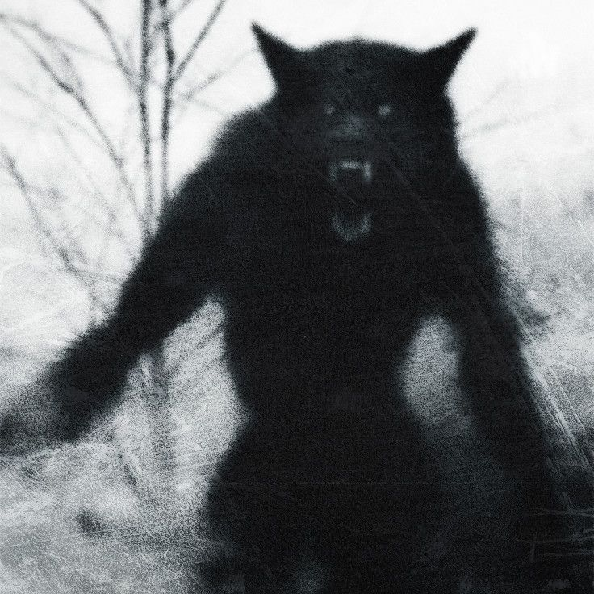
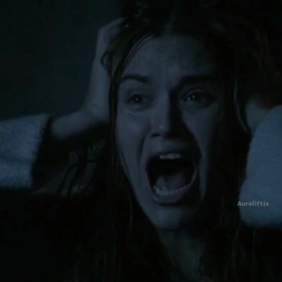
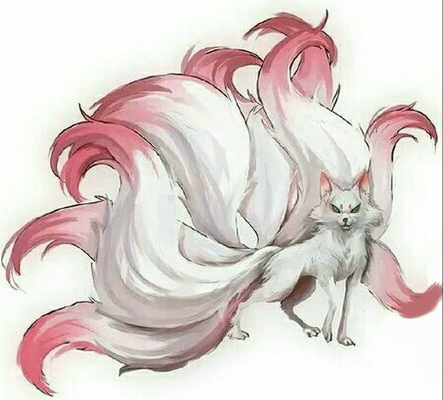
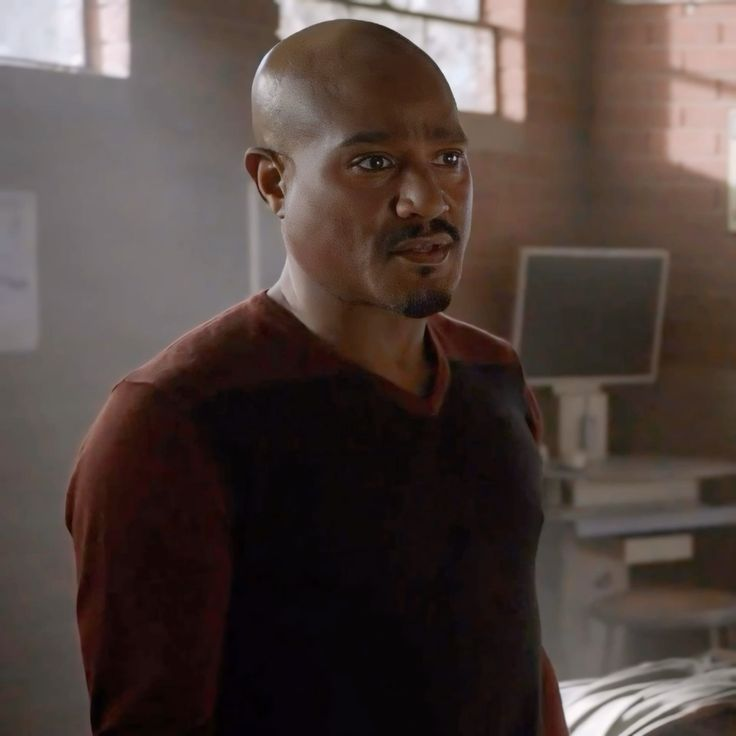
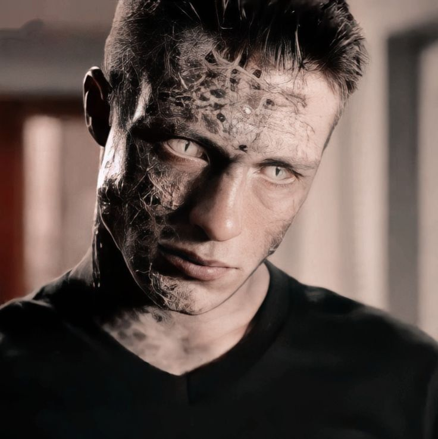
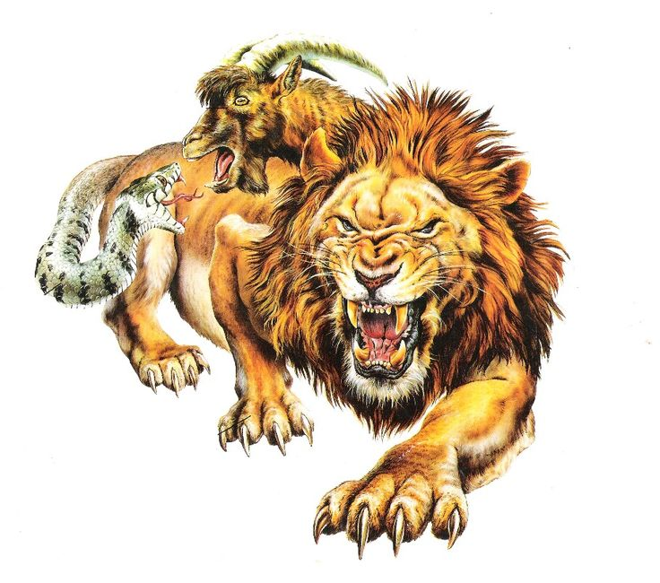
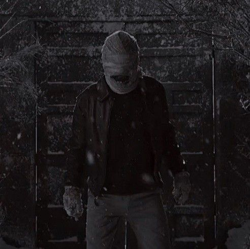
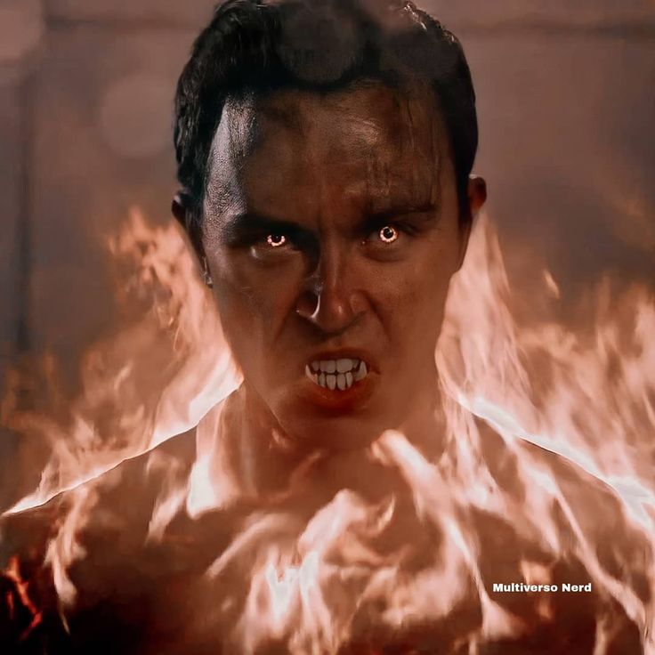
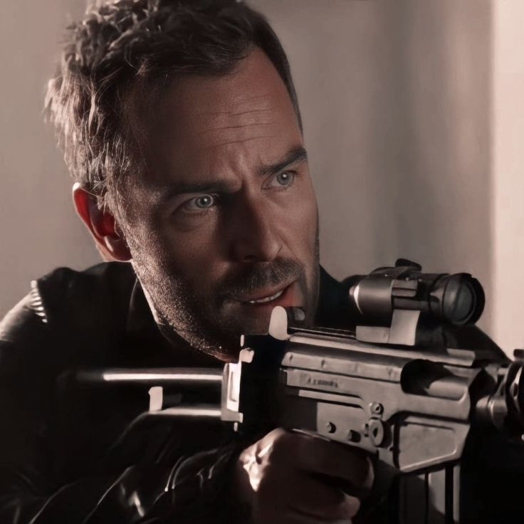
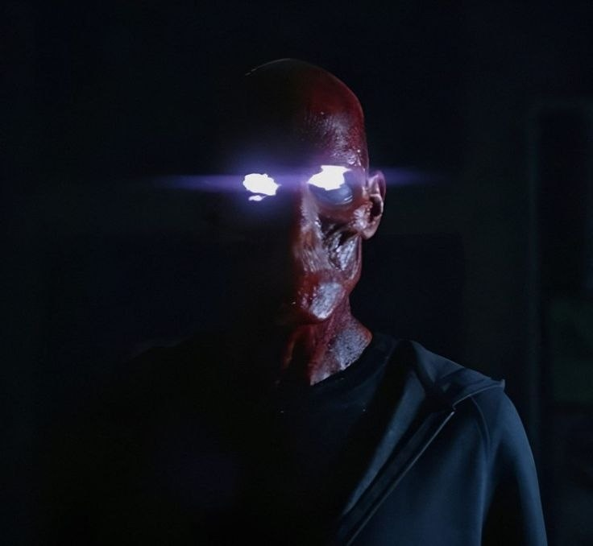

Перевертні
Найпоширеніші істоти. Вони мають надлюдську силу, швидкість, загострені почуття та здатність до швидкої регенерації. Важливу роль відіграє ієрархія: альфи, бети та омеги. Колір очей змінюється залежно від статусу та моральних вчинків, що підкреслює внутрішню природу персонажа.
tapp
Банші
Пов’язані зі смертю та потойбічним світом. Вони здатні відчувати наближення загибелі, чути голоси мертвих і передбачати трагедії. Їхній крик є потужним сигналом небезпеки. Часто ці здібності проявляються поступово і можуть бути неконтрольованими.
tapp
Кіцуне
Це духи з японської міфології, які володіють різними видами енергії, зокрема електричною. Вони можуть створювати ілюзії, впливати на свідомість і маніпулювати реальністю. Існує кілька типів кіцуне, кожен із яких має власну природу та силу.
tapp
Друїди (Емісари)
Це люди, які не мають фізичних надздібностей, але володіють глибокими знаннями про надприродний світ. Вони виступають наставниками, цілителями та хранителями балансу, допомагаючи іншим істотам контролювати свої сили та приймати правильні рішення.
tapp
Каніма
Це рідкісна форма перетворення, пов’язана з внутрішніми психологічними проблемами. Така істота часто підкоряється іншій людині й виконує її накази. Вона має отруйні кігті та здатність паралізувати жертв.
tapp
Химери
Це штучно створені істоти, які виникають унаслідок експериментів над людьми. Вони поєднують у собі риси різних надприродних видів і можуть мати нестабільні або унікальні здібності.
tapp
Ногіцунє
Tемний дух, який живиться хаосом, болем і страхом. Він не створює зло напряму, а провокує людей на жорстокі вчинки, маніпулюючи їхніми емоціями та свідомістю.
tapp
Вендіго
Істота з міфологічним корінням, яка асоціюється з канібалізмом і виживанням за будь-яку ціну. Вона має надсилу, витривалість і агресивну поведінку.
tapp
Берсерки
Це воїни, які втратили людську сутність і перетворилися на майже невразливих істот. Вони не відчувають болю, не мають страху та повністю підкоряються своєму господарю. Примарні вершники (Ghost Riders) Ці істоти приходять із іншого виміру і здатні стирати людей із реальності. Ті, кого вони забирають, поступово зникають із пам’яті всіх інших, ніби ніколи не існували.
tapp
Цербер
Надприродний захисник, пов’язаний із вогнем і смертю. Його головна роль — охороняти баланс між світами та знищувати загрози, які можуть його порушити.
tapp
Мисливці
Це люди, які борються з перевертнями та іншими істотами. Вони знають багато про надприродний світ і використовують спеціальну зброю. Одні мисливці захищають людей, а інші вважають усіх істот небезпечними.
tapp
Анук-Іте
Головний монстр другої частини 6 сезону Teen Wolf. Це давня істота, яка змушувала людей бачити свої найсильніші страхи. Її погляд був смертельним — той, хто дивився їй в очі, перетворювався на камінь. У фінальних серіях зграя Скотта об’єдналася, щоб зупинити її та врятувати Бейкон-Гіллс.
tapp